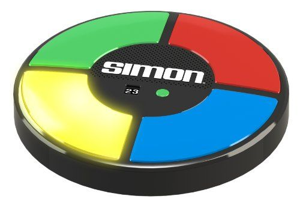
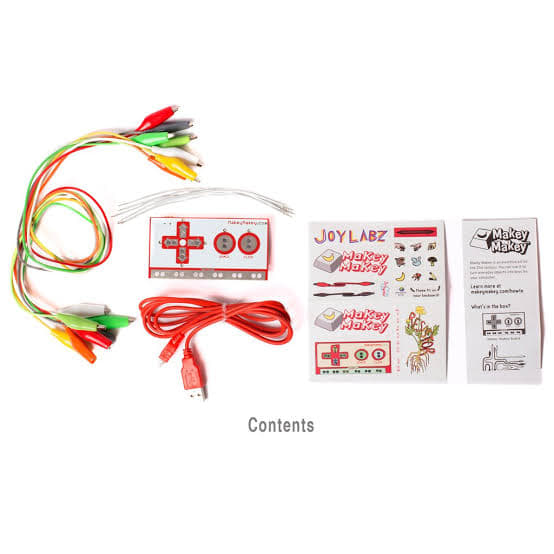
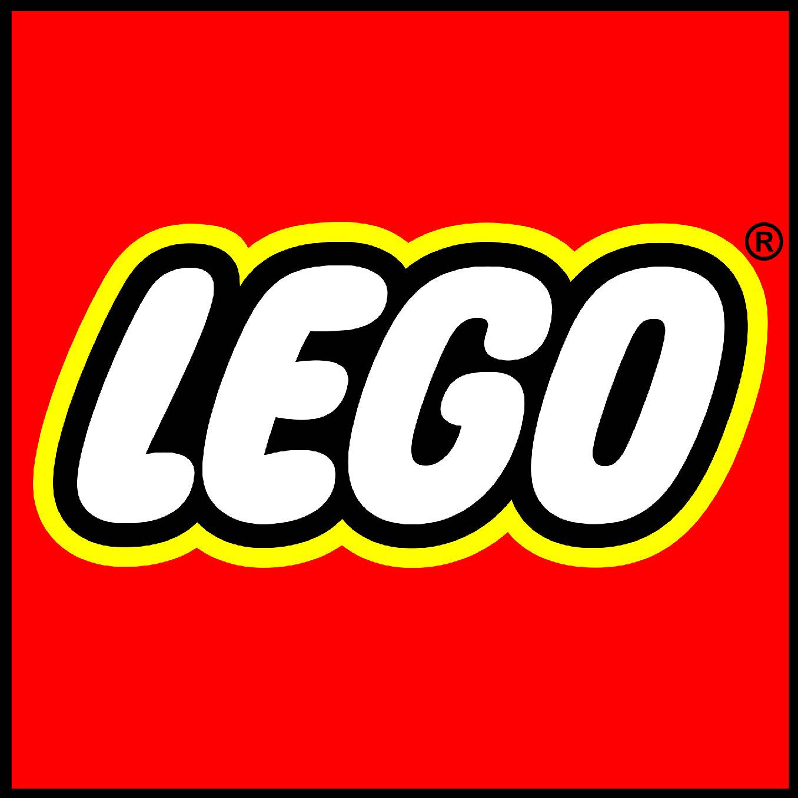
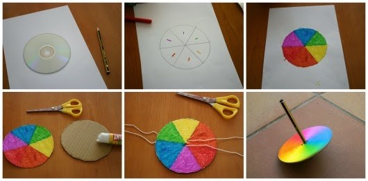
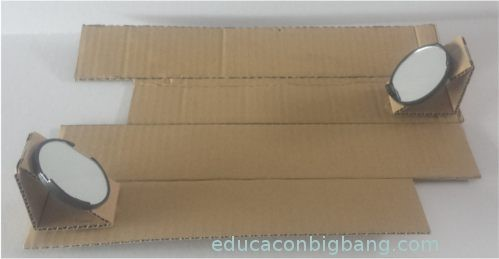
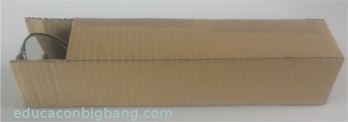
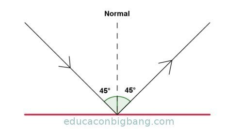
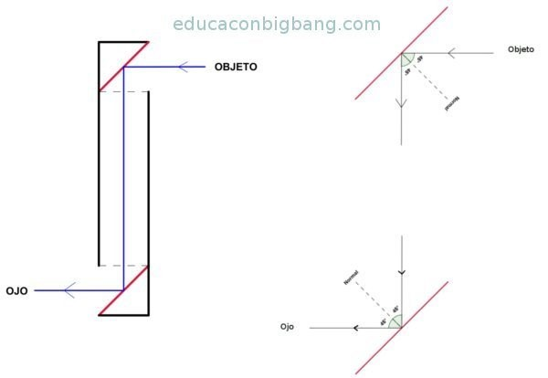
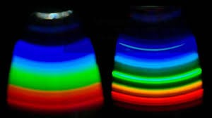

Este proyecto consiste en un juego de memoria el cual ayuda a las personas de cualquier edad, que nos permite estimular y fortalecer las habilidades de memoria visual . así como también la coordinación mano-ojo,
este juego nos permite continuar estimulando y fomentando estas habilidades, fortaleciendo la coordinación visual-motriz a la vez que se divierte jugando.
En la versión original el juego tiene cuatro botones, cada uno con un color distinto (verde, rojo, azul y amarillo), y cada botón tiene una nota musical asignada. Los botones van iluminando de forma aleatoria creando un patrón cada vez más largo,
el jugador tiene que repetir el patrón pulsando los botones sin fallar, si el jugador lo hace correctamente sube un nivel sumando un color más al patrón, pero si falla, el juego termina y vuelve a empezar desde el principio.
Imágen de juego original 
Nuestra versión del juego simon dice no solamente nos ayuda a fortalecer las habilidades del simon dice clásico sino que adapta la fisica e ingenieria electrónica para que asi las personas tengan una experiencia más grande al utilizar este,
esto ocurre ya que se utilizan sensores los cuales serán explicados así como también las luces led, y todos aquellos componentes electronicos que lo componen. Los cuales son el funcionamiento de sensores, luces y programador.
MATERIALES
Arduino
Leds de diferentes colores
Sensores ultrasónicos
Buzzer
LCD
Botón
Alimentación
Funcionamiento:
Para la elaboración de este proyecto se necesitan leds de diversos colores los cuales se colocaran en cada una de las cavidades
de la maqueta o carcasa del mismo, estos leds estarán a su vez conectados al controlador Arduino al igual que los sensores ultrasónicos,
por su parte la LCD estará colocada en el centro y nos indicará el nivel en el que nos encontramos actualmente, mientras que los buzzer
emite un sonido al perder o avanzar de nivel, todos estos componentes electronicos se controlar con el Arduino y se programar en lenguaje C Arduino el cual es un Open Source Language.
Este es un kit de invención para todos es un kit diseñado para conectar objetos cotidianos a las teclas de la computadora. Página oficial

Ejemplo de uso:
Scratch
Su principal característica consiste en que permite el desarrollo de habilidades mentales mediante el aprendizaje de la programación sin tener conocimientos profundos sobre el código.
Ejemplo de uso:
Lego Mindstorms

Lego Mindstorms es una línea de robótica para niños fabricada por la empresa LEGO, que posee elementos básicos de las teorías robóticas,
como la unión de piezas y la programación de acciones en forma interactiva. Este robot fue comercializado por primera vez en septiembre de 1998. Seguir leyendo
Ejemplo de proyectos:
Uno de los contra de esta opción es el costo, ya que tiene un costo relativamente alto aproximado de 6,500 pesos. Ir a tienda online
Disco de Newton

Materiales:
Un disco dañado (CD o DVD).
Pegamento.
Papel.
Mecanismo giratorio.
Elaboración:
1.- Dibuja un círculo dividido en siete sectores sobre el papel, pégalo sobre el CD.
2.- los colores de cada sector serán rojo, naranja, amarillo, verde, cian, azul y violeta.
3.-Al finalizar, monta el CD a un mecanismo giratorio para que gire alrededor de su centro.
Fundamento
Con este sencillo diseño podemos mostrar a los niños que el color blanco está formado por los siete colores del arco iris. Si se gira el disco con suficiente velocidad los colores se confunden, debido a la persistencia de las imágenes en la retina, y el disco se verá blanco.
Este experimento se complementa con el primero ya que en uno descomponemos luz blanca en sus diferentes colores, en este vemos como la suma de los colores generan el blanco.
Ejemplo de uso
Periscopio
Materiales:
Dos espejos pequeños, no hace falta que sean iguales.
Cartón.
Cinta adhesiva.
Cúter o tijeras.
Regla y lápiz.
Pegamento.
Elaboración:
1.- Lo primero es construir dos soportes triangulares de cartón en los que colocar los espejos, de manera que formen 45º con la longitud del periscopio. Para cada soporte, dibuja un rectángulo sobre un trozo de cartón. Además de tener en cuenta el tamaño de los espejos, el lado más largo estará formado por 3 segmentos: dos de ellos serán de igual longitud, mientras que la del tercero puedes calcularla con el teorema de Pitágoras.
2.- Divide el rectángulo en 3 partes según la longitud de los 3 segmentos.
3.- Une con cinta adhesiva y después pega los espejos en la hipotenusa.
4.- Elaborar el cuerpo del periscopio, que tendrá forma de caja. Traza sobre un cartón 4 rectángulos lo suficientemente anchos para acomodar los soportes.
5.- Corta dos ventanas en el cartón y pega los soportes como se indica en la foto.

6.- Dobla para obtener la caja y pegala.

Fundamento
El funcionamiento del periscopio está basado en la reflexión de la luz en los espejos. Según las leyes de la reflexión, el rayo incidente y el reflejado forman el mismo ángulo con la normal (línea perpendicular a la superficie del espejo).

Los rayos luminosos procedentes del objeto que se quiere observar inciden sobre el espejo situado en la parte superior. El rayo incidente se refleja con el mismo ángulo con el que incidió, 45°. De esta forma, el rayo reflejado viaja paralelo a la longitud del periscopio hasta que incide sobre el espejo colocado en la parte inferior. Una vez más, el rayo incidente forma 45º con la normal, por lo que el reflejado también, llegando así hasta el ojo y permitiendo la observación del objeto.

Espectroscopio
Materiales:
Un CD virgen
Una caja de cartón pequeña/mediana
El cartón de un rollo de papel higiénico
Pegamento o cinta adhesiva
Cinta aislante o cuchillas de afeitar
Tijeras y cúter
Elaboración 1.- En un lateral de la caja, se recorta un orificio más ancho que el rollo de cartón, para luego poder introducirlo de forma inclinada.
2.- En el frontal de la caja se debe dejar una rendija de 0,1 mm de grosor. Para que quede estrecha y uniforme coloca dos tiras de cinta aislante negra perfilando la rendija.
3.- En el interior de la caja, en el lado opuesto a la rendija, se pega el CD virgen dejando la parte brillante a la vista.
4.- Se coloca el tubo y se cierra la caja, comprobando que no entre luz por ningún sitio más que la mira y la rendija. Para garantizar la oscuridad dentro de la caja se pueden forrar las esquinas, o la caja entera, de papel de aluminio.
5.-Una vez construido nuestro espectroscopio, podremos apuntar a cualquier fuente de luz (salvo el sol) y ver su espectro en el interior de la caja. Para ello, apunta la rendija de la caja hacia la fuente de luz, y mira por el tubo de cartón hacia el CD del interior.
Fundamento: Haciendo incidir la luz a través de la rendija del espectroscopio, podemos analizar los espectros de varias fuentes luminosas. El CD actúa como red de difracción dividiendo la luz blanca en varios haz de luz que viaja en diferentes direcciones, el ángulo en el que se desvía la luz depende del color.

¿Qué es S.T.E.A.M.?
El acrónimo S.T.E.A.M. sirve para designar a disciplinas como Ciencia, Tecnología, Ingeniería, Arte y Matemáticas por sus siglas en inglés.
Para los organismos estadounidenses del Consejo Nacional de Investigación y la Fundación Nacional para la Ciencia, estas disciplinas son consideradas fundamentales para las sociedades tecnológicamente avanzadas.